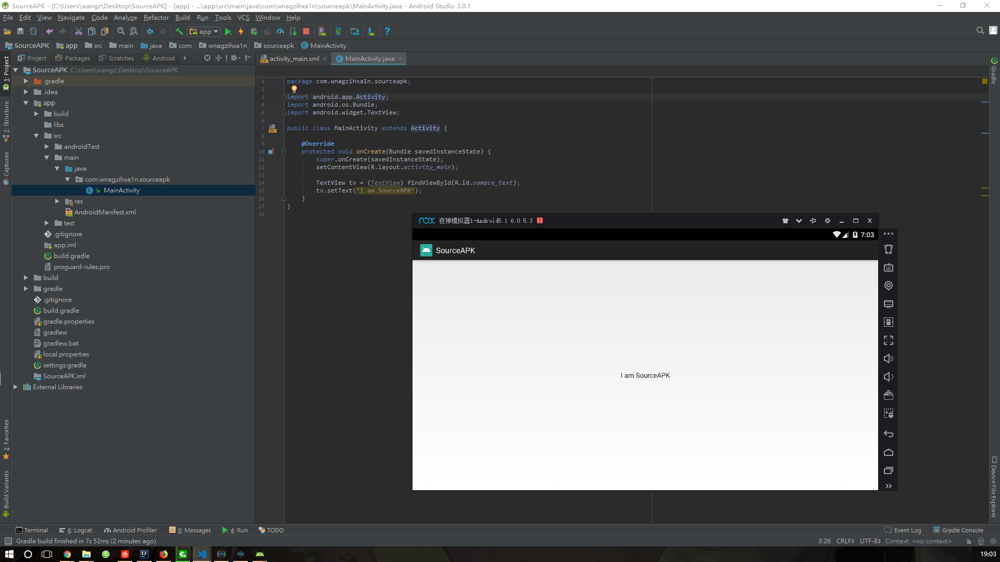

Author:wnagzihxa1n
E-Mail:wnagzihxa1n@gmail.com
前面几篇文章分享了如何在Java层对APK进行加壳，然而通过对现在市场上的第三方壳的分析，没有一家是纯粹使用Java代码实现壳的，即使是第一代壳，因为Java代码的特性，其反编译后的伪代码几乎就是源码，非常容易被逆向分析爱好者们分析出加壳逻辑，所以，从第一代壳开始，所有的壳都是以C和C++来实现壳代码，这样不仅可以实现很多Java实现不了的功能，还能增大脱壳难度
从这一篇文章开始，我们来详细分享如何使用C和C++代码实现第一代壳的自动化加壳机
创建新工程，配置好NDK开发环境，这点如果不是很清楚的同学还请自行搜索如何配置NDK开发环境
目前新版的Android Studio已经支持在创建工程的时候添加Native代码支持，自动化配置环境，挺方便的
源APK我们简单的修改下显示的字符串即可

接下来实现壳
Java层的壳在Java层的Application类里重写attachBaseContext()和onCreate()，那么我们在这里依旧是重写这两个方法，只不过是在Native层进行重写，只需要给这两个方法加上native前缀即可
@Override
public native void onCreate();
@Override
protected native void attachBaseContext(Context base);
然后在壳代码里实现这两个方法
JNIEXPORT void JNICALL native_onCreate(JNIEnv *env, jobject jobj) {
}
JNIEXPORT void JNICALL native_attachBaseContext(JNIEnv *env, jobject jobj, jobject ctx) {
}
动态注册两个函数
static JNINativeMethod methods[] = {
{"attachBaseContext", "(Landroid/content/Context;)V", (void *) native_attachBaseContext},
{"onCreate", "()V", (void *) native_onCreate},
};
JNIEXPORT jint JNICALL JNI_OnLoad(JavaVM* vm, void* reser) {
JNIEnv* env = nullptr;
if (vm->GetEnv((void **) &env, JNI_VERSION_1_6) != JNI_OK) {
return -1;
}
auto clazz = env->FindClass("com/wnagzihxa1n/protectapk/StupApplication");
if (clazz != nullptr) {
if (env->RegisterNatives(clazz, methods, 2) >= 0) {
return JNI_VERSION_1_6;
} else {
LOGE("---> Register methods failed");
}
}
return JNI_FALSE;
}
实现native_attachBaseContext()函数，首先要继承父类
// super.attachBaseContext(ctx);
jclass clazz_android_content_ContextWrapper = env->FindClass("android/content/ContextWrapper");
jmethodID methodID_super_attachBaseContext = env->GetMethodID(clazz_android_content_ContextWrapper,
"attachBaseContext",
"(Landroid/content/Context;)V");
env->CallNonvirtualVoidMethod(jobj,
clazz_android_content_ContextWrapper,
methodID_super_attachBaseContext,
ctx);
然后获取包名，进而拼接要释放解密后Dex文件的路径
jclass clazz_android_content_Context = env->FindClass("android/content/Context");
jmethodID methodID_getPackageName = env->GetMethodID(clazz_android_content_Context,
"getPackageName",
"()Ljava/lang/String;");
jstring jstr_PackageName = (jstring) env->CallObjectMethod(ctx, methodID_getPackageName);
const char* pPackageName = env->GetStringUTFChars(jstr_PackageName, 0);
std::string strPackageName = pPackageName;
std::string cachePath = "/data/data/" + strPackageName;
std::string cachefilePath = cachePath + "/encryptedDex.dex";
std::string cachefileOpt = cachePath + "/encryptedDex.odex";
获取释放的路径后，进行文件的解密释放，这里就不进行加解密操作了，直接释放
extractDexFile(env, jobj, cachefilePath.c_str());
具体实现由AAssetManager提供支持
bool extractDexFile(JNIEnv* env, jobject jobj, const char* szPath) {
AAssetManager* assetManager;
if (access(szPath, R_OK)) {
jclass clazz_StupApplication = env->GetObjectClass(jobj);
jmethodID methodID_getAssets = env->GetMethodID(clazz_StupApplication,
"getAssets",
"()Landroid/content/res/AssetManager;");
jobject jobj_assetManager = env->CallObjectMethod(jobj, methodID_getAssets);
assetManager = AAssetManager_fromJava(env, jobj_assetManager);
if (assetManager == nullptr) {
LOGE("Not get assetManager");
return JNI_FALSE;
}
AAsset* asset = AAssetManager_open(assetManager, "encryptedDex.dex", AASSET_MODE_STREAMING);
FILE* fp_encryptedDex = nullptr;
void* buffer = nullptr;
if (asset) {
int readCount = 0;
fp_encryptedDex = fopen(szPath, "w");
buffer = malloc(1024);
while ((readCount = AAsset_read(asset, buffer, 1024)) > 0) {
fwrite(buffer, readCount, 1, fp_encryptedDex);
}
free(buffer);
fclose(fp_encryptedDex);
AAsset_close(asset);
} else {
LOGE("Not open file encryptedDex.dex");
return JNI_FALSE;
}
}
return JNI_TRUE;
}
释放完后，进行加载获得一个Dex文件的对象
jstring jstr_cachefilePath = env->NewStringUTF(cachefilePath.c_str());
jstring jstr_cachefileOpt = env->NewStringUTF(cachefileOpt.c_str());
jclass clazz_DexFile = env->FindClass("dalvik/system/DexFile");
jmethodID methodID_loadDex = env->GetStaticMethodID(clazz_DexFile,
"loadDex",
"(Ljava/lang/String;Ljava/lang/String;I)Ldalvik/system/DexFile;");
auto jobj_dexFile = env->CallStaticObjectMethod(clazz_DexFile,
methodID_loadDex,
jstr_cachefilePath,
jstr_cachefileOpt,
false);
判断是否成功加载，成功加载后，调用makeDexElements()函数把加载起来的Dex文件添加到dexElements里去
if (jobj_dexFile != nullptr) {
jmethodID methodID_getClassLoader = env->GetMethodID(clazz_android_content_Context,
"getClassLoader",
"()Ljava/lang/ClassLoader;");
jobject jobj_classloader = env->CallObjectMethod(ctx, methodID_getClassLoader);
std::vector<jobject>jobj_dexFiles;
jobj_dexFiles.push_back(jobj_dexFile);
if (makeDexElements(env, jobj_classloader, jobj_dexFiles) == JNI_TRUE) {
LOGI("---> Bingo");
} else {
LOGE("---> Add the jobj_dexFile to array failed");
}
} else {
LOGE("---> Load file \"encryptedDex\" faied");
}
此处需要结合一下源码分析，我们都知道DexClassLoader最终是调用到BaseDexClassLoader
public BaseDexClassLoader(String dexPath, File optimizedDirectory,
String libraryPath, ClassLoader parent) {
super(parent);
this.pathList = new DexPathList(this, dexPath, libraryPath, optimizedDirectory);
}
DexPathList其中有个makeDexElements()函数如下，作用是把加载起来的Dex文件写进一个Element类型数组
private static Element[] makeDexElements(ArrayList<File> files, File optimizedDirectory,
ArrayList<IOException> suppressedExceptions) {
ArrayList<Element> elements = new ArrayList<Element>();
for (File file : files) {
File zip = null;
DexFile dex = null;
String name = file.getName();
if (name.endsWith(DEX_SUFFIX)) {
try {
dex = loadDexFile(file, optimizedDirectory);
} catch (IOException ex) {
System.logE("Unable to load dex file: " + file, ex);
}
} else if (name.endsWith(APK_SUFFIX) || name.endsWith(JAR_SUFFIX)
|| name.endsWith(ZIP_SUFFIX)) {
zip = file;
try {
dex = loadDexFile(file, optimizedDirectory);
} catch (IOException suppressed) {
suppressedExceptions.add(suppressed);
}
} else if (file.isDirectory()) {
elements.add(new Element(file, true, null, null));
} else {
System.logW("Unknown file type for: " + file);
}
if ((zip != null) || (dex != null)) {
elements.add(new Element(file, false, zip, dex));
}
}
return elements.toArray(new Element[elements.size()]);
}
再看调用这个函数的地方，返回值赋值给dexElements
this.dexElements = makeDexElements(splitDexPath(dexPath), optimizedDirectory, suppressedExceptions);
所以这里我们在把Dex文件加载起来后，需要添加到上面说的dexElements，首先获取原dexElements，然后重构一个新的new_jobj_dexElements，构造好后，替换回去即可
bool makeDexElements(JNIEnv* env, jobject classloader, const std::vector<jobject>& jobj_dexFiles) {
LOGI("---> In makeDexElements()");
if (jobj_dexFiles.empty()) {
return JNI_FALSE;
}
jclass clazz_dalvik_system_BaseDexClassLoader = env->FindClass("dalvik/system/BaseDexClassLoader");
jfieldID filedID_pathList = env->GetFieldID(clazz_dalvik_system_BaseDexClassLoader,
"pathList",
"Ldalvik/system/DexPathList;");
jobject jfield_pathList = env->GetObjectField(classloader, filedID_pathList);
jclass clazz_dalvik_system_DexPathList = env->FindClass("dalvik/system/DexPathList");
jfieldID jfieldID_dexElements = env->GetFieldID(clazz_dalvik_system_DexPathList,
"dexElements",
"[Ldalvik/system/DexPathList$Element;");
jobjectArray jfield_dexElements = (jobjectArray) env->GetObjectField(jfield_pathList, jfieldID_dexElements);
if (jfield_dexElements != nullptr ) {
LOGI("Get dexElements");
}
jint dexElementCount = env->GetArrayLength(jfield_dexElements);
jint dexElementNewCount = dexElementCount + jobj_dexFiles.size();
jclass clazz_dalvik_system_DexPathList$Element = env->FindClass("dalvik/system/DexPathList$Element");
jobjectArray new_jobj_dexElements = env->NewObjectArray(dexElementNewCount,
clazz_dalvik_system_DexPathList$Element,
nullptr);
for (auto i = 0; i < dexElementCount; i++) {
env->SetObjectArrayElement(new_jobj_dexElements, i, env->GetObjectArrayElement(jfield_dexElements, i));
}
jmethodID methodID_element_init = env->GetMethodID(clazz_dalvik_system_DexPathList$Element,
"<init>",
"(Ljava/io/File;ZLjava/io/File;Ldalvik/system/DexFile;)V");
for (auto i = 0; i < jobj_dexFiles.size(); i++) {
jobject new_dexElement = env->NewObject(clazz_dalvik_system_DexPathList$Element,
methodID_element_init,
nullptr,
false,
nullptr, jobj_dexFiles[i]);
env->SetObjectArrayElement(new_jobj_dexElements, dexElementCount + i, new_dexElement);
}
env->SetObjectField(jfield_pathList, jfieldID_dexElements, new_jobj_dexElements);
return JNI_TRUE;
}
最后处理下AndroidManifest.xml，这个要看壳的AndroidManifest.xml怎么写的，如果是抄的源APK，在没有Application的情况下，只需要添加我们的StupApplication即可，由于我这里是后来新建的工程，所以需要指定下activity
<activity android:name="com.wnagzihxa1n.sourceapk.MainActivity">
整个壳的实现大概就是这样，跑起来后，效果如下图